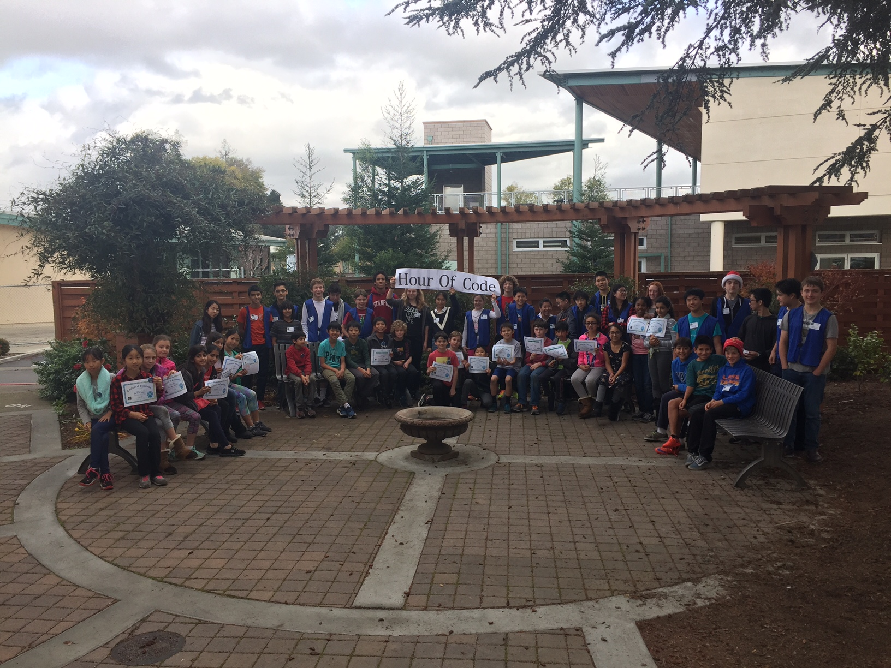

The world-wide phenomena of the hour of code is coming to an end. JLS has coded 17,000 Lines of code! Keep it up JLS! Computers teacher Mrs. Willis has not yet finished counting, but so far, that 17,000! Some of this years most popular games are, LightBot, Minecraft Build-A-Game, And Moana has been a real hit after the disney movie. Students in Mrs. Willis’s Computer class have been exclusively teaching 5th graders how to code, as well as devoting their time to helping JLS students at lunch. Students have been coming everyday to code at lunch, and since there aren't near enough computers, some people have shared 1 computer for 4 people! Nice sharing JLS!
If you are in 8th grade, you probably heard of this. Our first final. Students have been freaking out over studying, and that's a good thing. Some have not been studying whatsoever. SPECIAL INTERVIEW; Students saying what they think about the math final.
“It was da scary and da death” - Jeaston
“I think i did very well” - Bryce